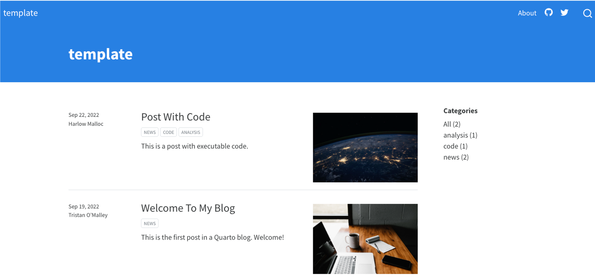
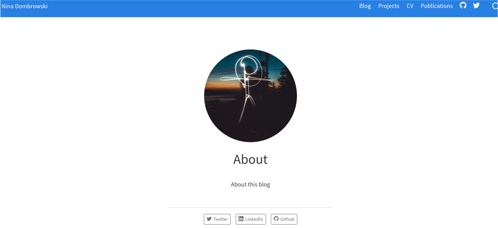

Getting started
I recently decided that it is time to update my personal website and realized that the system I used did not fit my needs anymore. So …. what to do?
I recently moved to Quarto to document my code and write reports and saw that it is also possible to create websites as well, which turned out to be surprisingly easy. To make this work, you should have Quarto installed and have a basic understanding of the markup language Markdown.

The Quarto webpage comes with an excellent documentation, which I recommend you have a look at first. After doing so myself, I started setting up a template for a blog by typing this into my terminal:
quarto create-project template --type website:blogThis creates a folder with the name template (so change the name in the command above if you want to have a more creative name) that includes all the required templates to immediately build a test website.
You can have a look at how this website would look like. Do do this, go into the newly created template folder and type:
quarto previewThis should give you a first impression and if you use the preview option your page should update as you work on it. Initially, the page should look like this:

Personalizing our website
In order to have a website more suited to reflect my academic work, I wanted to add more categories into the navigation bar to, for example, describe what I currently work on (my Projects) and list my publications on another site. To do this, I added new quarto files for each category, such as projects.qmd, publications.qmd, into my website folder, changed the titles and filled each document with content.
I also didn’t want my starting page to be the blog page but I want viewers to first get some basic information about me. To do this I changed the file names like this:
mv index.qmd blog.qmd
mv about.qmd index.qmdAll of these changes have to be reflected in the configuration file (the file that controls how the different parts of a website are organized), which for us is called _quarto.yml. To add the new pages and organize them to the left and right in the navigation bar I changed the YAML file to contain the following:
project:
type: website
website:
title: ""
navbar:
title: false
left:
- text: "Nina Dombrowski"
file: index.qmd
right:
- blog.qmd
- projects.qmd
- cv.qmd
- publications.qmd
- icon: github
href: github.com/
- icon: twitter
href: https://twitter.com/If we have look how our website looks now, then we should see something like this:

Much better! Now, I just proceeded and filled the different pages with more personal information.
Changing the theme
If you look more closely into the configuration file, you can see that we use a custom theme, cosmo. There are other schemes you can choose from and these already look very nice.
However, I wanted to learn how to have more control over my website and for this we can use CSS. First, we have to generate a new file, theme.scss and then tell our _quarto.yml configuration file that we want to use this custom scss theme:
format:
html:
theme: theme.scssWithout going into too much detail, the theme.scss allows us to control every aspect of our webpage. For example, I wanted to change the color of the navbar, change the color of my text, justify the text and make center my figure legends (as I for my projects page). To do so, I changed some settings in the theme.scss:
/*-- scss:defaults --*/
// Navbar colors
$primary: #1A5276 !default;
// Links
$link-color: #0E86D4 !default;
// Fonts
$font-family-base: "Segoe UI", Roboto, "Helvetica Neue", "Noto Sans", "Liberation Sans", Arial, sans-serif !default;
$headings-font-family: "Segoe UI", Roboto, "Helvetica Neue", "Noto Sans", "Liberation Sans", Arial, sans-serif !default;
$body-color: $gray-900 !default;
$body-text-align: justify !default;
/*-- scss:rules --*/
//Figure settings
figcaption.center {
text-align: center;
color: $gray-800;
font-size: 12px;
font-style: italic;
}Once, I was happy with my website, I rendered it with:
quarto renderI am still working on the details, especially the CSS part, but in case you want some inspiration, all code can be found here.
Publishing our website
Next, the big question was where to publish my website and luckily quarto works well with different publishing services, such as GitHub Pages, Netlify and it even comes with its own publishing service, Quarto pub. Quarto pub and Netlify are very easy to setup: you create an account, be sure to be logged into the account and publish the webpage with:
quarto publishI tried out all three and decided to work with GitHub Pages since I anyhow use GitHub for my code.
GitHub Pages take a bit more to get started. First I created an empty github repository in order to setup a GitHub Pages site. If you are unfamiliar with how to do this you can find a step-by-step guide here.
Next, the only thing I had to do was:
- Set the source branch of the GitHub pages to the gh-pages branch and set the repository to root
- Ignore some of the files in my folder by adding some lines in the .gitignore:
/.Quarto//_site/
Once that was set the only thing I had to do was publish the site with
quarto publish gh-pagesAnd voilà, here we are!